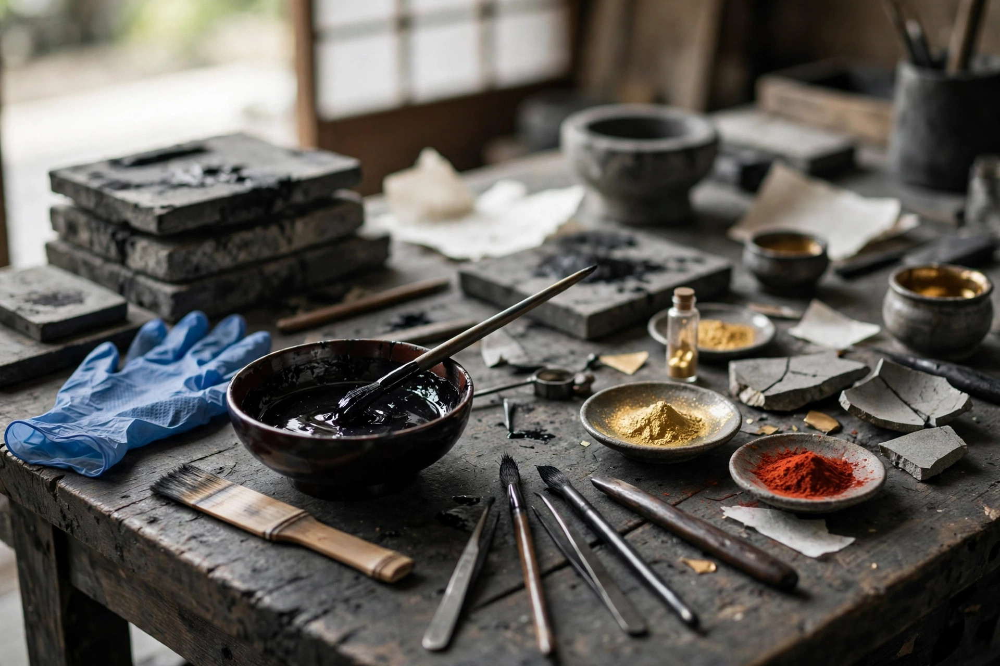

漆かぶれの原因と対処 ― 安全に金継ぎを楽しむために

漆かぶれの主な原因は、生漆に含まれる成分ウルシオールです。予防の基本は「素手で触らない」こと。ニトリル手袋・長袖・換気をそろえ、触れてしまったら早めに洗い流すのが目安です。十分に硬化した漆では成分は働かなくなるとされ、完成した器は通常どおり使えます。
かぶれの正体はウルシオール
漆はウルシの木の樹液です。その主成分の一つであるウルシオールは、皮膚に触れると体質によってアレルギー性の皮膚炎、いわゆる「漆かぶれ」を起こすことがあります。症状や出方は人によって大きく異なり、軽い赤みで済む人もいれば、かゆみや水ぶくれが強く出る人もいます。
大切なのは、「一度もかぶれたことがないから大丈夫」とは言い切れない点です。これまで平気だった人でも、体調や付着した量、触れていた時間によって症状が出る場合があるとされます。逆に、漆職人のように長く漆に触れてきた人の中には、次第に反応しにくくなる例もあると言われますが、個人差が大きいため、誰にでも当てはまる目安にはなりません。初めて金継ぎに挑戦する方ほど、最初から予防を前提に準備することをおすすめします。
かぶれを防ぐ基本の備え
作業前の準備
- ニトリル手袋を着ける：漆は油になじみやすいため、一般には薄手のゴム手袋より、耐油性のあるニトリル手袋が向いているとされます。破れたらすぐに交換してください。
- 長袖・前掛けで肌を覆う：腕や首元など、無意識に触れやすい部分を覆うのが目安です。付着した衣類は分けて洗うと安心です。
- 換気をする：室内にこもらないよう窓を開けるなど、空気の流れを確保してください。
作業中の注意
作業中は、漆のついた手袋で顔や首を触らないことが重要です。ヘラや筆、漆を入れた容器の外側にも漆が回りやすいため、「漆がついているかもしれない場所は素手で触らない」と決めておくと、思わぬ付着を減らせます。使った筆や布の置き場所を決めておくことも、予防の一つです。
触れてしまったとき・症状が出たとき
生漆が皮膚についてしまった場合は、一般的な対処として、なるべく早く石けんと水で丁寧に洗い流すことが挙げられます。強くこすって皮膚を傷つけると、かえって刺激になる場合があるため、泡で包むようにやさしく洗うのが目安です。洗ったあとも、タオルや衣類に漆が残っていないか確認してください。
かゆみや赤みが広がる、水ぶくれが出る、顔や目のまわりに症状が出るなど、症状が強い場合や不安がある場合は、自己判断で様子を見続けず、皮膚科の受診をご検討ください。本記事は一般的な情報の紹介にとどまるもので、症状の診断や治療の代わりになるものではありません。
硬化後の漆と、合成うるしとの違い
漆は、乾燥ではなく湿気の中で酸化・重合して硬まる材料です。十分に硬化が進むと、ウルシオールは働かなくなるとされており、完成した漆器や金継ぎした器を日常的に素手で扱うことができるのはそのためです。ただし、硬化が不十分な段階のものは生漆と同じように扱い、完成直後は触れる頻度を控えるのが目安です。
| 種類 | かぶれへの注意の目安 | 特徴 |
|---|---|---|
| 生漆（硬化前） | ウルシオールを含むため、手袋などの予防が前提 | 金継ぎ本来の材料。湿気の中で硬化する |
| 漆（十分に硬化後） | 成分は働かなくなるとされ、通常は素手で扱える | 完成した漆器・金継ぎの状態 |
| 合成うるし | ウルシオールを含まない製品が多いが、表示の確認を | 扱いやすい反面、質感や耐久性は製品ごとに異なる |
合成うるしは、かぶれの心配を減らしたい入門用として選ばれることがあります。一方で、仕上がりの質感や長期の耐久性では本漆と差が出る場合もあるとされます。どちらが良い・悪いではなく、体質と目的に合わせて選ぶことが、金継ぎを長く楽しむコツです。
材料選びや金継ぎの進め方で迷ったら
- 金継ぎ材料・鑑定済み砥石のご案内を見る ― 取り扱い材料と仲介の仕組みをご紹介しています。
- 砥石データベースを見る ― 包丁の手入れに使う天然砥石を、硬度や価格帯から探せます。
- お問い合わせ ― 体質に合った材料選びのご相談も承っています。
よくある質問
- 漆にかぶれたことがない人は、これからも大丈夫ですか？
- 必ずしもそうとは限りません。かぶれには体質差があり、回を重ねてから症状が出る場合もあるとされます。初めての方も、ニトリル手袋や長袖などの予防を基本にするのが目安です。
- 漆が皮膚についてしまったら、どうすればよいですか？
- 一般的な対処として、なるべく早く石けんと水で丁寧に洗い流すことが挙げられます。強くこすらず、付着した衣類や道具にも触れないよう注意してください。症状が強い場合は皮膚科の受診をご検討ください。
- 硬化した漆の器は、素手で触っても大丈夫ですか？
- 十分に硬化した漆では、かぶれの原因成分は働かなくなるとされています。そのため、完成した漆器は日常的に素手で使うことが多いですが、硬化が不十分な段階では生漆と同じように扱うのが目安です。
- 合成うるしなら、かぶれる心配はありませんか？
- 合成うるしはウルシオールを含まない製品が多く、その点では生漆より扱いやすいとされます。ただし製品ごとに成分が異なるため、表示を確認し、手袋を使うなどの基本的な注意は続けるのが目安です。